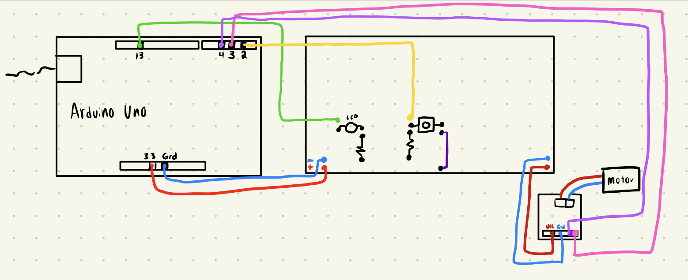

<br>
# WEEK 5: MICROCONTROLLERS
#### Ideation
This week was the first week where everything was completely new to me. I had never worked with a microcontoller before, I had never built a circuit with a goal in mind, I had never coded anything that had any kind of function, let alone one that connected to a physical circuit. I decided to "play it safe" and make sure I understood the basics of microcontrollers before I tried anything too difficult. With my final project in mind, I came up with a motion largely inspired by what we did in class. I would have 3 components: a button, a light, and a motor. I avoided complicated mechanisms driven by the motor this time - mainly because I didn't want to return to my week 2 contraption or build a new mechanism, but also to focus on the coding and circuit component of the microcontroller.
The idea was for the button to start the motor, which would spin a certain amount, then stop, and when it stops a light would turn on until the button is released.
It's not directly related to my final project, which is a self defense necklace/ring, but I imagine the coding might be similar. On the ring, there will be a button that triggers a mechanism on the necklace. I image this mechanism being 2 parts - one would "open" the necklace to expose a sac of ink, and the 2nd part would be to "shoot" the ink out. I'm not 100% positive how this mechanism might work yet, but the button, one motion, and another motion seems doable.
I then started coding with arduino. I tried to recall the code we used during class for the motor. Since I was using a small yellow motor, and not a servo motor, rather than stopping the motor based on position, I decided to calculate a time that it should spin roughly halfway around. I wanted to have every trigger in the circuit be based on time. I wanted to work without delays and have one action follow another seamlessly.
First, I set up my circuit and checked with the basic example codes for "Blink," "Button," and the motor practice we did on Thursday's class. I checked that my circuit still worked whenever I added a new component, before coding anything complicated. This is what my circuit looked like, and here is a sketch that simplifies it:
 <img alt="circuit photo" src="./circuitphoto.png" width=400 height=auto />
Then, I started adjusting the code. The coding was actually a lot easier than I had originally anticipated. All I had to do was combine the constants and setup information from the Button and the motor codes we used in class. I didn't bother making any classes or object oriented code because I know I won't need this for my final project, since I only plan on having a single mechanism. This is what my code ended up looking like at the start:
<pre><code class="language-arduino">
const int buttonPin = 2; // the number of the pushbutton pin
const int ledPin = 13; // the number of the LED pin
const int A1A = 3; // define pin 3 for A-1A
const int A1B = 4; // define pin 4 for A-1B
// variables will change:
int buttonState = 0; // variable for reading the pushbutton status
void setup() {
// initialize the LED pin as an output:
pinMode(ledPin, OUTPUT);
// initialize the pushbutton pin as an input:
pinMode(buttonPin, INPUT);
pinMode(A1A, OUTPUT); // specify these pins as outputs
pinMode(A1B, OUTPUT);
digitalWrite(A1A, LOW); // start with the motors off
digitalWrite(A1B, LOW);
}
</code></pre>
Then, I had to modify the if/else statements. To keep it simple, I wanted to just have the LED turn on after the motor was done. The equivalent in my final project would be some trigger that "bursts" an ink sac, and since this mechanism would only happen one time, I am not concerned with my code getting too messy with additional components. The if statements looked like this:
<pre><code class="language-arduino">
void loop() {
// read the state of the pushbutton value:
buttonState = digitalRead(buttonPin);
// check if the pushbutton is pressed. If it is, the buttonState is HIGH:
if (buttonState == HIGH) {
if (millis() > 3000)
// turn LED on:
digitalWrite(ledPin, HIGH);
} else {
// turn LED off:
digitalWrite(ledPin, LOW);
}
if ((buttonState == HIGH) && (millis() < 3000)) {
digitalWrite(A1A, HIGH);
digitalWrite(A1B, LOW);
} else {
digitalWrite(A1A, LOW);
digitalWrite(A1B, LOW);
}
}
</code></pre>
Here is a gif of the microcontroller in action, from the moment the button is pressed to the moment it is released:
<img alt="gif of microcontroller powering motor and led" src="./microgif.gif"/>
As a side note, I'm getting tired of the placeholder I have for my website currently. I've been sick these last two weeks, which has made it hard to motivate myself to do any work beyond what was absolutely necessary, but I plan on completely revamping this website this weekend so I don't need to do it once things get more stressful later. Hooray for long weekends.
****My code is taking a long time to upload probably because of the video file. Started uploading around 1:20pm on tues but as of 2:55 it hasn't pushed to main yet***